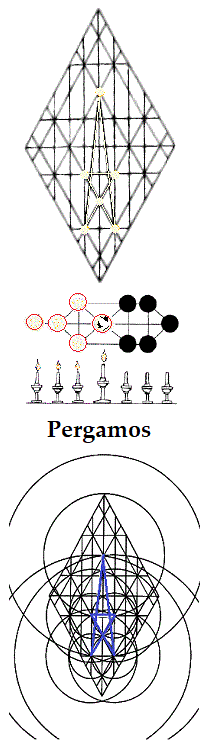
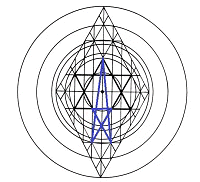

Back in the Wilderness: the Rough Places, Plain
Take
my yoke upon thee, and learn of me And to the angel of the church in Pergamos write; These things saith he
which hath the sharp sword with two edges; I know thy works and where
thou dwellest, even where Satan's seat is: and thou holdest fast my
name, and hast not denied my faith, even in those days wherein Antipas
was my faithful martyr, who was slain among you, where Satan dwelleth.Hod and Netsach:
The Church at Pergamos
But I have a few things against thee, because thou hast there them
that hold the doctrine of Balaam, who taught Balac to cast a stumbling
block before the children of Yisrael, to eat things sacrificed unto
idols, and to commit fornication. So hast thou also them that hold the
doctrine of the Nicolaitans, which thing I hate. Repent; or else I will
come unto thee quickly, and will fight against them with the sword of my
mouth.
He that hath an ear, let him hear what the Spirit saith
unto the churches; To him that
overcometh will I give to eat of the
hidden manna, and will give him a white stone, and in the stone a new
name written, which no man knoweth saving he that receiveth it.
{kind=link}
Satan is the prince of the power of the
air, the covering cherub of
the governing forces of instability. A ruler
of the second heaven (the first heaven is the mind of man), the
adversary gains entrance into
Adam-- into the Temple of Elohim-- through
the use of air for speech; for we know both that it is not what goes
into a man that defiles him, but what comes out of him, and that death
and life are in the power of the tongue as a former of words. As the
exchange of air within the body is accomplished in the lungs, we
understand that they are constantly open to the spiritual element of
air-- dwelling, in a sense, within it; and the animal mind is
ever-mindful of their operations; for the capacity of natural breath is
a significant bridle on human will.
Even as the firmament is the dividing line
between waters above and waters below, the lungs are that bodily region
in which one senses the line of demarcation between the higher and the
lower faculties. In their lower function, the lungs supply oxygen to the
body's metabolic fires; in their higher function, they are the bellows
that fan the fires of the lips. In the more elevated service, however,
the lungs supply only the raw material necessary for speech: yet higher
faculties mold their contribution into intelligent sounds. Nevertheless,
it is in the lungs, as in the firmament, that we begin to differentiate
between things above and things below.
The overwhelming focus of the message to the angel of Pergamos
is the power of speech.
Yahushúa appears in his role as Spokesman,
reminding us that his words are of a different order than our own (they
are Spirit, and they are Life): because by him is enunciated the Living
Word of Elohim. As the message proceeds, moreover, it compels us to
recall the importance of the intricacies of oral communication in all
contexts-- both as concerns the revelations of
Torah, of revelations yet
to come, while not overlooking the significance of our casual
conversations; for every word shall be measured and judged for its
spiritual impact within the social order. We are brethren.
The church at Pergamos is comprised of the binary light of Netsach (Endurance) and Hod (Majesty). This dualism is apparent in the function of the lungs, whose unity of operation in man as flesh is well known to all. This third light of the Menorah has yet other traditional names, which speak more openly of their significance in the complete Adam. The spheres are also known, respectively, as the Remnant (the Body) and as Messiah (Spirit). We could apply to them yet other names that answer to the binary principle understood in the traditional names, bringing their relevance loser to the context of the message at Pergamos-- for example, the disciples and the Apostle. the congregation and the minister, and so forth.
Overcoming in Malkuth and Yesod, the pilgrim in Mashiyach has yet many way stations on his journey to perfection. As he approaches Netsach and Hod, which are representative of the collective Body of Messiah, there are forks in the road and choices to be made. Shall he continue to walk in the Light he has known, or shall he turn aside to the other lights he perceives? The message to the angel of Smyrna has prepared him for the choice, but it remains a difficult decision-- especially as all spheres affirm the Light he has known, albeit with different hues.
Though he invites destruction by choosing for himself either the right- or the left-hand path (in which case, he risks being led not by the Spirit, but by the reasonings of the carnal mind-- a way that seems right to man), the pilgrim positively invokes destruction by judging those stationed in the spheres to which the branching paths lead as being contrary to Messiah: for as he judges, he will be judged; and he, himself, may be called to serve either in a congregation or as minister to a congregation, whether of one sort or of another. He will certainly be called to take some position in the Body. Before a pilgrim can find his proper place and function in the Church, therefore, he must overcome in Pergamos, that his mind will be ordered correctly to interpret meanings and to discern sources of the mixed sounds that will continue to fill the air therein as the Body moves towards the perfection of maturity.
The Foreword of this book deals with the difficulty of assessing the value and source of words spoken on behalf of the Kingdom of Elohim. To overcome in Pergamos is to learn the application of the messages to Smyrna and Ephesus. Focused in the single Light shining in all of God's Sons, we do not stumble because of its apparent movements among them. At one moment, a man's words seem true; at another, false-- what of it! Seek and serve the Light of Ruach haElohim. It may be necessary for another, truly serving that Light, to appear as a deceiver (while he, himself, remains true), that the focus of an immature brother may be restored to the Source.
Though we have ten thousand instructors in Messiah, yet we have not many fathers. Learn to hear the Father's voice from within the Body, that you may come both to hear and to speak in his power: not as the seer Balaam, who heard as from without and long remained deaf to the significance of that which was spoken unto him, agreeing with Balac that another altar in another time at another place might give other counsel.
A brother's words are received as clean only as they are heard and understood in Messiah. To hear in a focus that celebrates the individual is to eat things sacrificed to idols and to commit fornication, whether or not the words were spoken to that intent. See thou do it not: worship Elohim, and have fellowship with thy fellow servants who have the testimony of Yahushúa.
Manna-- literally, "a what-ness"-- what is it? It
is likened unto a little, white pebble: to a clean word with which to
nourish the growing Celestial Body, not unlike the stone used by Dawid
to restore faith in
Y'Sharal, whose covering of faith had been severely
threatened by the boastings of Goliath.
There is a tradition that the written word of Torah, whose books are sometimes called "The Five Stones," is black fire upon white fire (as it is written, "He will magnify the law, and make it honorable"). In this context, manna is the white fire of Spirit surrounding every jot and tittle of Tanakh. The fullness of the names written therein are known only to those to whom the Fire of Heaven is given; and thus, He who overcomes receives a baptism of fire.
Until the fullness of that day comes, let us rest, as we are given, in the Light emanating from the white fire of the written Word, that-- wherever we find ourselves positioned in the collective Body of Messiah-- we shall be prepared to move beyond Pergamos on the center path as we are drawn by the Father unto perfection in the Son. When Yahushúa returns to seal the firstfruits with the baptism of fire, he shall arise from within the hearts of those able to walk with him on the Mount of Understanding; and these shall carry forth the heavenly fire of Torah to all people, armed with the sweet savor of the Gospel of Truth.
| Thyatira | ||||
| Pergamos |
 |
Sardis | ||
| Smyrna | Philadelphia | |||
| Ephesus | Laodicea | |||
|
site |
book |
|||